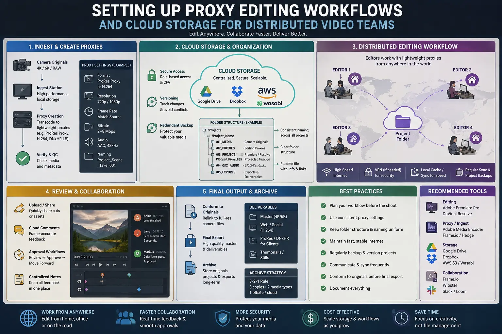
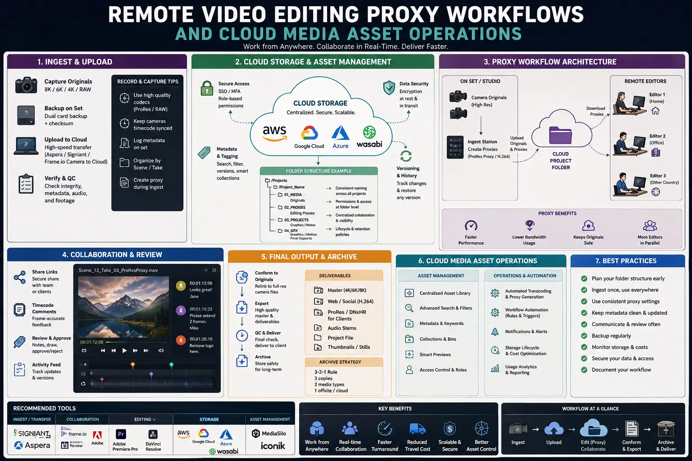
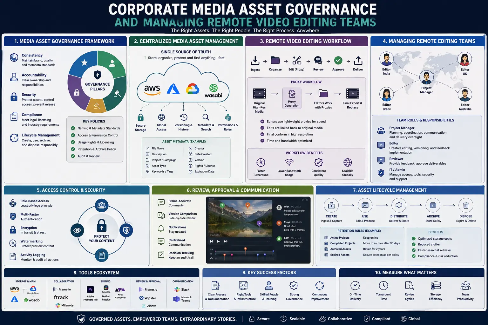

Setting Up Proxy Editing Workflows and Cloud Storage for Distributed Video Teams
The Paradigm Shift to Distributed Post-Production
Modern commercial video production has undergone a fundamental transformation. With high-end digital cinema cameras capturing footage in 4K, 6K, and 8K uncompressed RAW formats, production studios generate massive datasets for every single shooting day. A single commercial campaign shoot can quickly generate anywhere from two to ten terabytes of camera original files. Traditionally, post-production teams relied on physical hard drives shipped via courier services to distribute media to editors, assistant editors, colorists, and sound designers. However, in today's fast-paced digital ecosystem, physical shipping introduces severe friction: long shipping delays, risk of drive damage, high customs bottlenecks for international projects, and broken version histories.
To overcome these operational bottlenecks, forward-thinking agencies are adopting modern Remote Video Editing Proxy Workflows. By shifting from local hard drive dependencies to integrated cloud media infrastructures, post-production teams can collaborate seamlessly across cities, time zones, and continents. Implementing robust Cloud Media Asset Operations allows video production companies to stream, sync, and edit camera files in real time without sacrificing performance. Furthermore, establishing comprehensive Corporate Media Asset Governance ensures that enterprise video assets remain secure, organized, and fully redundant throughout the creative lifecycle.
Whether you are an agency in Madurai, a post-production supervisor in Mumbai, or managing an international team across London and New York, mastering a structured Remote video editing proxy setup is no longer optional—it is the cornerstone of scalable, high-margin video production.
Fundamentals of a Remote Video Editing Proxy Setup
At its core, a proxy editing workflow separates the heavy data processing requirements of camera master files from the creative playback requirements of the non-linear editing system (NLE). When camera operators record footage on set, camera original files (such as REDCODE RAW, ARRI ALEXA Log-C, Sony XAVC, or Blackmagic RAW) are saved with massive bitrates to preserve maximum dynamic range and color depth. While these master files are essential for final color grading and visual effects rendering, scrubbing through multiple streams of 8K RAW footage places immense strain on network bandwidth and computer hardware.
A well-executed proxy setup solves this problem by creating lightweight, low-bitrate duplicate files that maintain the exact frame rate, timecode, audio channel configuration, and aspect ratio of the original camera media. By utilizing lightweight proxy video editing, editors can assemble complex, multi-cam narrative timelines on standard laptop hardware without experiencing dropped frames, system freezing, or overheating.
The key to successful proxy workflows lies in maintaining strict metadata parity between master files and proxy files:
-
Identical File Naming Standards: Proxy
files must match the exact filename of the camera master
(e.g.,
A001_C003_0801XA_001.mov) or follow a predictable prefix/suffix structure that NLEs can automatically interpret during relinking. - Timecode and Frame Rate Synchronization: The proxy transcoder must preserve embedded SMPTE timecode track data down to the exact sub-frame. Any drift in timecode will result in misaligned edits during the final conform pass.
- Audio Track Structure: Proxies must mirror the exact audio channel layout of the original camera recording (e.g., 8 discrete scratch/lav/boom channels), ensuring sound editors do not encounter missing audio tracks upon relinking.
- Color Space Management: Applying an automatic Rec.709 normalized LUT during proxy creation enables offline editors to view natural contrast and skin tones without requiring heavy real-time color transformation nodes.
Empowering Collaboration with Premiere Pro & Frame.io
Creating lightweight files is only half the equation; the real power of modern distributed editing comes from cloud-connected collaboration tools. Modern creative software suits have evolved to support cloud-native post-production pipelines directly inside NLE interfaces.
Integrating
Premiere Pro Cloud Team Projects allows lead
editors, assistant editors, motion graphics artists, and audio
mixers to work concurrently on the same project sequence.
Rather than sending project files (such as
.prproj files) back and forth via messaging
apps—which inevitably leads to duplicate sequences like
Edit_v3_FINAL_final2.prproj—Cloud Team Projects
store project metadata securely on cloud servers. When an
assistant editor creates new bin structures or syncs multi-cam
clips, the lead editor receives a subtle notification to pull
the updates instantly into their active workspace.
Furthermore, pairing NLE timelines with Frame.io post-production workflows establishes a frictionless bridge between camera crews on set, remote edit suites, and executive stakeholders. Through Camera-to-Cloud (C2C) hardware encoders connected directly to cinema cameras, proxy files can automatically upload to Frame.io seconds after the director calls "cut." Editors located thousands of miles away can begin cutting the scene while the production team is still lighting the next setup.
Client review loops are similarly transformed: stakeholders can view review cuts on mobile devices, leave timecode-accurate feedback comments, draw annotations directly on video frames, and approve cuts without leaving the Frame.io web portal. These feedback markers sync directly back into Premiere Pro or DaVinci Resolve timelines as clickable sequence markers, eliminating manual timecode copy-pasting.
Accelerated Turnaround Times
Leveraging lightweight proxy video editing reduces media transfer times from days to minutes, allowing editors to deliver rough cuts faster than traditional hard-drive shipping methods.
Global Talent Access
By removing local hardware and bandwidth limitations, creative directors can recruit top-tier editors, colorists, and sound designers worldwide when managing remote video editing teams.
Enterprise Security & Control
Implementing Corporate Media Asset Governance protects confidential client footage behind role-based cloud permissions, watermarked preview links, and encrypted cloud transfers.
Synchronized Review Loops
Integrating Frame.io post-production workflows streamlines client approvals through timecode-accurate annotations, reducing edit revisions and revision confusion.

Strategic Architecture for Cloud Media Storage & Governance
Building a reliable distributed edit engine requires a carefully architected cloud storage tier strategy. Simply dumping camera files into standard personal cloud folders leads to syncing errors, file lockouts, and storage quota exhaustion. Enterprise media environments rely on a tiered approach to balance speed, cost, and redundancy:
- Active Workspace Storage (Virtual Shared NAS): Solutions like LucidLink Filespaces or Suite Studios stream media files on demand. Rather than downloading entire 500GB video files to local hard drives, these virtual filespaces stream only the specific byte blocks requested by the NLE timeline. To the editor's operating system, the cloud storage appears as a high-speed local NVMe drive.
- Review & Collaboration Layer: Frame.io or Dropbox Enterprise serves as the interactive presentation layer for client reviews, rough-cut feedback, proxy distribution, and asset handoffs.
- Local Studio Master NAS & Cold Archive: Master camera RAW files are offloaded on set using checksum verification software (e.g., Silverstack or ShotPut Pro) to local high-speed RAID NAS storage (such as QNAP or Synology). These master files are simultaneously backed up to cold cloud storage (such as AWS S3 Glacier or Backblaze B2) for long-term disaster recovery.
Establishing clear protocols for Cloud Media Asset Operations prevents network clutter and bandwidth bottlenecks. Automated ingest scripts can watch local offload folders, generate 1080p ProRes Proxy files automatically via Adobe Media Encoder or DaVinci Resolve CLI, and upload only the proxy folder to the virtual cloud workspace.
Governance rules are equally vital when managing remote video editing teams. Without strict permissions, remote editors might accidentally move master media, delete raw project files, or overwrite sequence files. A robust governance framework includes establishing standardized folder structures across all projects:
PROJECT_NAME_YYYYMMDD/
├── 01_FOOTAGE/
│ ├── CAM_A/
│ └── CAM_B/
├── 02_PROXIES/
│ ├── CAM_A_PROXY/
│ └── CAM_B_PROXY/
├── 03_AUDIO/
│ ├── VOICEOVER/
│ ├── MUSIC/
│ └── SFX/
├── 04_PROJECT_FILES/
│ └── PREMIERE/
├── 05_GRAPHICS/
├── 06_EXPORTS/
│ ├── INTERNAL_REVIEW/
│ └── CLIENT_DELIVERABLES/
└── 07_DOCUMENTS/
├── SCRIPTS/
└── CALL_SHEETS/
NLE & Team Apps
- Premiere Pro Cloud Team Projects for live sequence syncing.
- Frame.io post-production workflows for timeline review.
- DaVinci Resolve Project Server for cloud grading.
- Slack / Teams for instant edit team messaging.
Cloud & Storage Tools
- LucidLink Filespaces for real-time cloud streaming.
- AWS S3 Glacier for cold archive storage.
- Synology Drive for studio NAS cloud mirroring.
- Dropbox Enterprise for project documentation.
Ingest & Governance
- Silverstack Lab for checksum camera offloads.
- Adobe Media Encoder for batch proxy generation.
- DaVinci Resolve Studio for auto-LUT proxy render.
- Kyno / CatDV for media metadata logging.

Step-by-Step Implementation Guide for Production Studios
Transitioning your agency or studio to a fully distributed cloud proxy workflow requires a structured 5-step implementation plan:
Step 1: On-Set Ingest & Checksum Verification
As soon as memory cards come off the camera, the Data Digital Technician (DIT) or loader ingests footage onto local studio drives using MD5 or xxHash checksum verification. This guarantees bit-for-bit file integrity before memory cards are formatted.
Step 2: Automated Proxy Transcoding
Load camera original files into your transcoding engine (Adobe Media Encoder, DaVinci Resolve, or Silverstack). Transcode all clips using a standardized proxy preset:
- Codec: Apple ProRes 422 Proxy or Avid DNxHR LB (for Mac/PC cross-platform editing), or H.264 10-bit MP4 (for lightweight bandwidth streaming).
- Resolution: 1920×1080 (maintaining 16:9 aspect ratio) or 2048×1080 (for 2K/4K DCI aspect ratios).
- Audio: Uncompressed Linear PCM, matching exact source channels and sample rate (48kHz/24-bit).
- LUT: Bake in a standardized camera-to-Rec.709 conversion LUT so editors view correct color contrast.
Step 3: Cloud Synchronization & Workspace Allocation
Upload the generated proxy directory to your cloud streaming filespace (LucidLink or Frame.io). Notify remote editors via Slack or your project management dashboard. Remote editors open their NLE, link to the cloud proxy folder, and begin cutting immediately.
Step 4: Collaborative Editing & Review Passes
Editors create timelines inside Premiere Pro Cloud Team Projects. As rough cuts are completed, editors push video renders directly to Frame.io post-production workflows for internal review. Creative directors and clients add timecode comments, and editors execute revision passes smoothly.
Step 5: Master Conform & Final Rendering
Once the picture is locked, the assistant editor opens the master project file on the local studio workstation connected to the original camera RAW NAS storage. Using the NLE's built-in "Toggle Proxies" or "Relink High-Res Media" feature, the timeline instantly points back to the 8K camera master files. The project is handed over to color grading in DaVinci Resolve and sound mixing in Pro Tools for final high-resolution master export.
Frequently Asked Questions
Here are answers to common questions about setting up cloud media pipelines and managing remote post-production teams:
1. What is a remote video editing proxy setup and how does it streamline cloud media asset operations?
A remote video editing proxy setup is an operational framework where high-resolution 4K or 8K camera RAW files are transcoded into lightweight, low-bitrate proxy files (such as ProRes Proxy or H.264 1080p). These compact files are synced automatically to cloud storage platforms (such as Frame.io, LucidLink, or Dropbox), allowing remote editors to cut complex timelines on laptops without downloading terabytes of camera RAW files. Once editing is finalized, NLE projects link back to original high-res camera master files on local studio servers for color grading and master rendering.
2. How do Premiere Pro Cloud Team Projects and Frame.io post-production workflows improve team collaboration?
Premiere Pro Cloud Team Projects allow multiple editors, motion designers, and colorists to collaborate on a single NLE timeline simultaneously without overwriting project files or encountering duplicate media conflicts. Frame.io integrates directly inside NLE timelines, enabling client review, timecode-accurate feedback comments, and automatic proxy file upload directly from camera rigs on set.
3. What corporate media asset governance rules are required for managing remote video editing teams?
Essential governance rules for remote teams include: first, establishing standardized folder structures and file-naming conventions; second, enforcing automated proxy generation scripts immediately after camera offloading; third, using secure, encrypted cloud storage with role-based access control; fourth, locking master NLE project files during final review passes; and fifth, maintaining 3-2-1 backup redundancy across both local studio NAS servers and cold cloud storage.
4. Why is lightweight proxy video editing essential for global video production scalability?
Lightweight proxy video editing frees production teams from geographic and bandwidth constraints. By transmitting compact 1GB proxy packages instead of 500GB camera RAW drives, agencies can hire top remote editing talent worldwide, accelerate turnaround times, and maintain continuous 24/7 post-production workflows.
Conclusion & Strategic Roadmap
Transitioning to cloud-first post-production is no longer a future concept—it is the operational standard for high-performance commercial creative agencies. By combining Remote Video Editing Proxy Workflows, cloud streaming drives, and Corporate Media Asset Governance, production studios eliminate project delays, secure their media assets, and deliver world-class video content at scale.
At The PhD Ads in Madurai, we specialize in building end-to-end video production engines, high-converting ad creative strategies, and streamlined post-production workflows. Whether you need corporate promotional films, commercial ad campaigns, or guidance on managing remote video editing teams, our team delivers results that drive real business growth.
Key Topics
Ready to Build a High-Performance Remote Proxy Video Editing Workflow?
At The PhD Ads in Madurai, we help brands and agencies design seamless cloud media asset operations, implement high-speed proxy pipelines, and scale distributed post-production teams.
Email: team@e2o.in